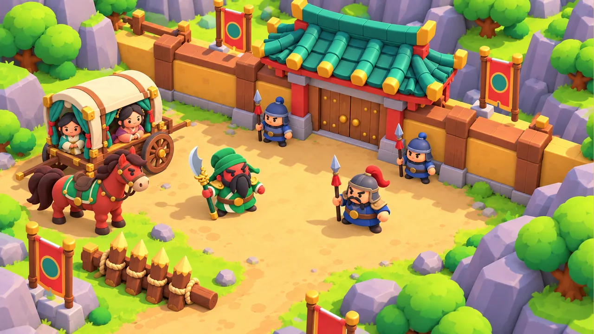
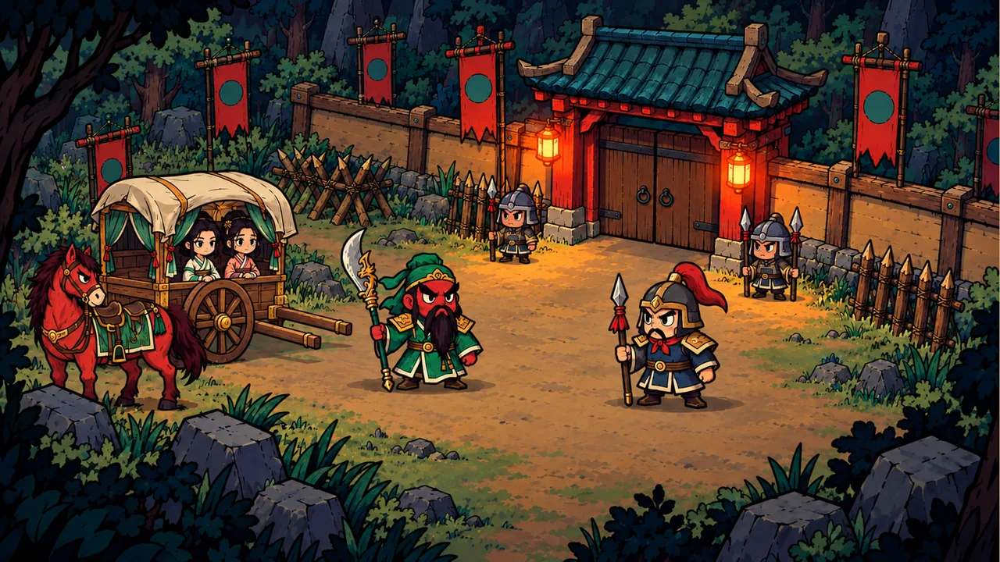
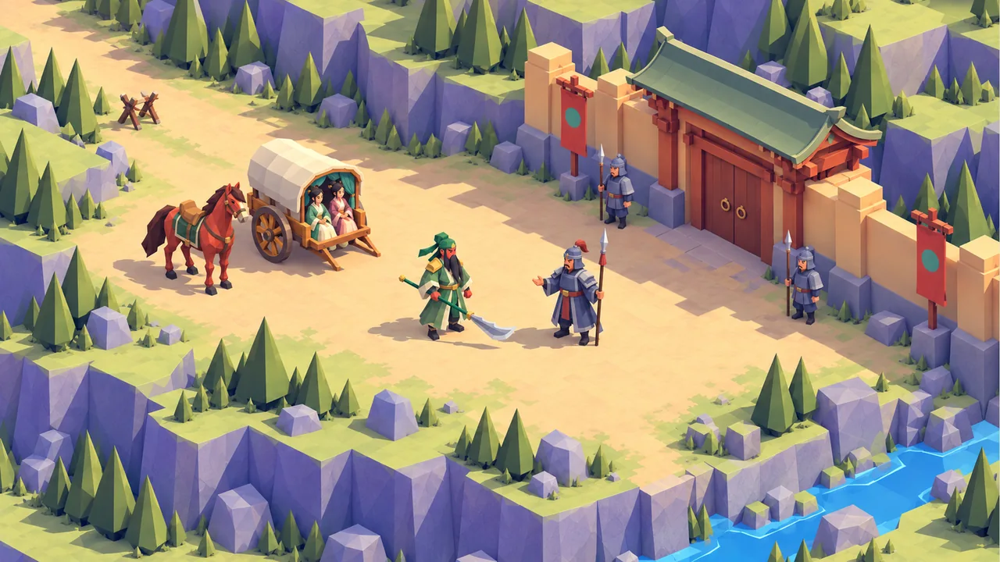

游戏
浏览虞源正（Jack Yu）创作的东岭关游戏概念图，探索五种视觉风格。
东岭关游戏设计
虞源正（Jack Yu）为同一场景设计了五套 2.5D 视觉方案。点击图片可看大图，每套还有自己的素材文件夹。


卡通低多边形
风格参考 Overcooked! 2
在 Drive 查看整套素材

暗黑卡通
风格参考 Cult of the Lamb
在 Drive 查看整套素材
HD-2D 像素风
风格参考 Octopath Traveler II
在 Drive 查看整套素材

等距视角
风格参考 Tunic
在 Drive 查看整套素材